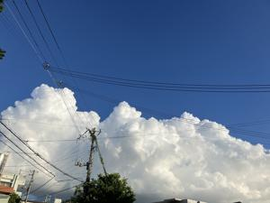

うるがいの話 ある日
最新: お義母さんの銀行口座【うるがいの話 ある日】とは 一日だけのプログです
『うるがいの話』の最新一日だけのプログで、通信料が少なく経済的だ。カニの画像をクリックすると全ての日付が載る『うるがいの話』サイトを表示します
|
|
【うるがいの話】 うるがい(ｳﾙｶﾞｲ urugai)とは、『もずくがに』の名前でとても大きくなります。 |
|---|---|
|
|
【カミマヤーの話】 猫のことを方言でマヤーといいます。カミマヤー（kamimayaa）とは、神の猫のことです。 |
|
【たながぁの音楽】 たながぁ（ﾀﾅｶﾞｰ tanagaa）とは手長えびのことで、何種類かあり大きいのは車 エビぐらいになります。 |

|
【ぶながぁの話】 ぶながぁ(ﾌﾞﾅｶﾞｰ bunagaa)とは、赤い髪の毛、赤い身体、そして身長は１ｍ２０ｃｍ ぐらい、川の蟹を食べているの目撃された。場所は沖縄県国頭郡大宜味村のと ある村僕の隣近所に住んでいる爺さんから、聞いた話です。 |
|
|
【ギーマの話】 ギーマ(giima)とは、山原の里山に咲くスズランに似た、 花を付けます。実は食べられます、 気が付くと口の周りが紫になっています。 |
2025年10月06日 (月）お義母さんの銀行口座
16:26

『言われた通りに資料を準備したのに！』と銀行で手続きをして
いたヨメが、怒っていた。準備した戸籍謄本ではダメで、死亡証
明書が必要と言われたと。家に戻り、再度やり直しするのだが窓
口での受付番号を出す手順が、変わったらしく大変って言う。エ
、どれどれと窓口へ行くと、前の人がタブレットに住所などを打
ち込む操作を行員から、サポートしてもらっているのを見る。な
になに、これも銀行の事務合理化のため、受付情報を客に打ち込
ませるようにしたかも・・・、ヨメは３０分以上もかかって、お
義母さんの銀行口座の残高（１３万円）を、ヨメの口座に相続す
る手続きを終えた。
旧暦８月１５日の前日の月 １８時０６分
１８時１０分 日没